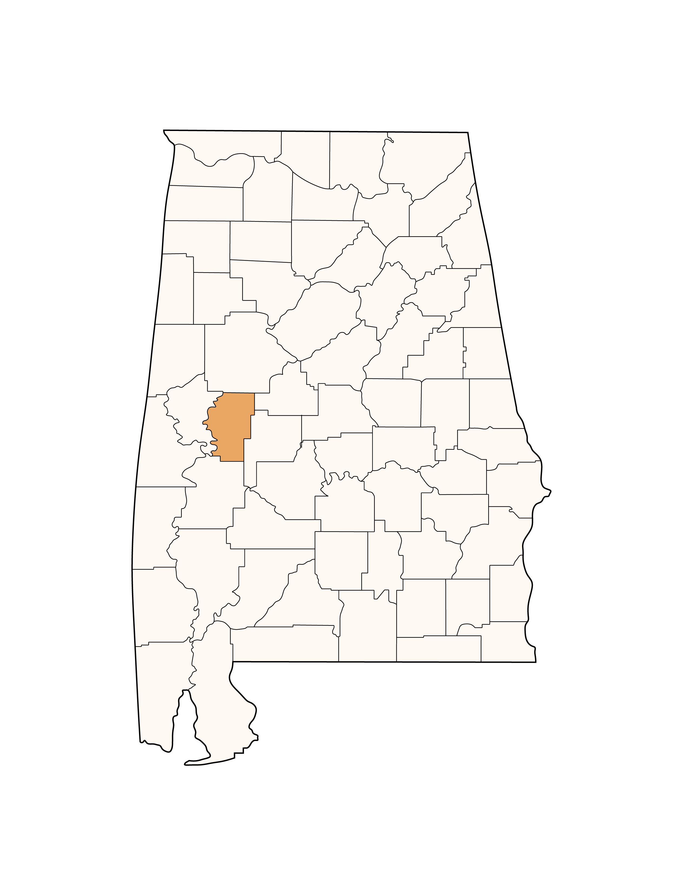
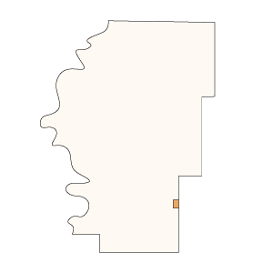
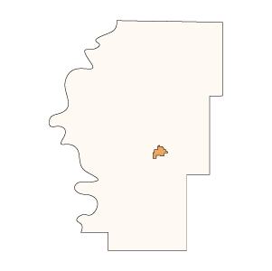

The Legacy of Samuel Mockbee & Rural Studio
Hale County Projects

Bryant Haybale House | 1993-94
Smoke House | 1993-94
Yancey Chapel | 1994-95
Butterfly House | 1996-97
Mason's Bend Basketball Court | 2000
Glass Chapel | 1999-2000
Newbern Projects

Supershed | 1994-95
Spencer House | 1997-98
Pods | 1999-2000
Newbern Playground | 2000-01
Greensboro Projects

HERO Playground | 1996-97
HERO Children's Center | 1997-98
Sanders Dudley House | 1998-99